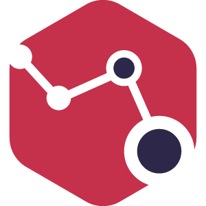

Model runner
Run a downloaded model on a computer, or connect to a hosted model.
Ollama runs a model made by a provider. Our local demo uses downloaded weights; adding reference documents does not retrain them.
Look up model providers, healthcare vendors, and AI features from established companies.
Reference last checked September 25, 2026
Start with the four familiar providers marked below. Explore the rest by task or category. Model versions, features, and access can change.
The organization that makes or sells the technology.
The trained system that produces an answer, image, or other output.
The app people use. It can combine models, search, files, and other tools.
What the product helps someone do.
22 providers
No providers match. Try a broader term or choose “All categories.”
| Company | Model families | Products | What people use it for |
|---|---|---|---|
| GPT | ChatGPT; Codex | Draft, research, work with files, and build or change software. ChatGPT and Codex are products. GPT names a model family. | |
| Claude | Claude; Claude Code | Work through questions, documents, and coding tasks. Claude is both a model family and an app name. Claude Code is a coding tool. | |
| Gemini; Gemma | Gemini app; Google AI Studio | Work with text, images, and other media; try models and build with them. Gemini names both models and an app. Gemma is a separate family with downloadable model weights. | |
| Phi; models from other providers | Copilot; Copilot Studio | Use AI in work apps and create assistants that connect to work information. Copilot is a product name, not one model. Microsoft also builds models and hosts other providers' models. | |
| Llama; Muse | Meta AI; Meta Model API | Use Meta's assistant or build applications with its model offerings. Llama's downloadable models and the newer Muse offerings have different access and license terms. | |
| Mistral; Ministral | Mistral Vibe; Mistral API | Work with chat, code, and documents using hosted or selected downloadable models. Vibe is the current product name for the assistant previously called Le Chat. Model licenses vary. | |
| Qwen | Qwen app; Alibaba Cloud Model Studio | Use an assistant or build with hosted and downloadable models, including small models for local demos. Qwen is a model family and an app name. Not every Qwen model is downloadable or has the same license. | |
| DeepSeek | DeepSeek chat; DeepSeek API | Ask questions, work through problems, and use models inside coding or agent tools. DeepSeek names both the company and its models. A compatible API does not mean it uses an OpenAI model. | |
xAI Language & multimodal | Grok; Grok Imagine | Grok app; Grok API | Work with chat, code, search, images, video, and voice, depending on the model and tools selected. Grok is an app and a model family. Current information requires search tools; a model alone does not have live knowledge. |
| Command; Embed; Rerank; Aya | Cohere API; enterprise deployments | Answer questions using company documents, find related information, and order search results by relevance. Generation, search embeddings, and reranking do different jobs. This is a different company from Cohere Health.Official sourcesCohere model guide ↗ | |
AI21 Language & multimodal | Jamba | AI21 Studio; private deployments | Build document-based question answering and other text workflows, including with smaller downloadable models. Jamba is a model family. AI21 Studio and private deployment options are ways to use it. |
| Nova | Amazon Bedrock; Nova Act | Build applications with text, image, and speech models, or automate browser tasks with an agent. Amazon makes Nova models. Bedrock is a platform that also provides models from other companies. | |
NVIDIA Language & multimodal | Nemotron; Cosmos | NVIDIA model catalog; NIM | Build AI applications with models for language, speech, and visual or physical-world tasks. NVIDIA makes chips, models, and software. NIM packages models for deployment; it is not one model. |
IBM Language & multimodal | Granite | watsonx.ai; watsonx Orchestrate | Build applications for document questions, speech, search, forecasting, and other business tasks. Granite is IBM's model family. watsonx.ai is a platform that also supports models from other providers.Official sourcesIBM Granite ↗ |
Moonshot AI Language & multimodal | Kimi | Kimi app; Kimi Code; Kimi API | Analyze documents, create work materials, and build software through an assistant or API. Moonshot is the company. Kimi names its models and user-facing products.Official sourcesMoonshot AI and Kimi ↗ |
| MiniMax language, video, speech, and music models | MiniMax Code; MiniMax Design; MiniMax Audio | Build software and create visual or audio material using different models for different tasks. MiniMax supplies several kinds of model. Its coding, design, and audio products are separate ways to use them.Official sourcesMiniMax models and products ↗ | |
| GLM | Z.ai chat; Z.ai API; GLM Coding Plan | Work through text, coding, and tasks that require a model to call tools. GLM is the model family. Z.ai names the chat and API offerings; you may also hear the company called Zhipu AI. | |
Black Forest Labs Image & video | FLUX | BFL Playground; BFL API | Create and edit images from written instructions and reference images. FLUX is the model family. Hosted access and downloadable weights have different terms and capabilities.Official sourcesBlack Forest Labs ↗ |
Stability AI Image & video | Stable Diffusion; Stable Audio | Stability API; Stable Audio | Generate images and audio, or use selected downloadable models in a custom application. The image and audio model families are separate. Downloadable models still have license terms.Official sourcesStability models and tools ↗ |
Adobe Image & video | Firefly | Firefly app; Creative Cloud tools | Generate and edit images, video, audio, and design material within creative workflows. Adobe makes Firefly models, but the Firefly app also offers models from other companies. Check which model you select.Official sourcesAdobe Firefly ↗ |
Runway Image & video | Gen; Aleph; General World Models | Runway app; Runway developer platform | Generate or edit video and explore models that simulate visual environments. Runway is both a model developer and a creative product. Its platform also offers a model router, so model choice still matters.Official sourcesRunway models and tools ↗ |
| Eleven speech models; Scribe; Eleven Music | ElevenCreative; ElevenAgents; ElevenLabs API | Create narration, transcribe speech, dub audio, and build voice-based assistants. Speech generation, speech recognition, and voice agents are different capabilities, even when sold in one platform.Official sourcesElevenLabs models and products ↗ |
Model runner
Run a downloaded model on a computer, or connect to a hosted model.
Ollama runs a model made by a provider. Our local demo uses downloaded weights; adding reference documents does not retrain them.
App builder
Describe an application, then build, inspect, and revise the result.
Lovable is a development product that uses AI. It is not a model family.
These vendors sell products for different parts of healthcare. Their product pages explain what they offer; they do not establish that a tool will work well in every organization. Use the questions here to look past the feature list.
30 vendors
No vendors match. Try a broader term or choose “All categories.”
| Vendor and setting | Product | What it does | A useful question |
|---|---|---|---|
Epic Health records and operations | Art; Penny; Emmie | AI features for clinicians, billing and operations teams, and patients inside Epic workflows. | Which step changes, who checks the result, and does the feature fit the way staff already work? |
Abridge Clinical documentation | Abridge | Turn a clinical conversation into a draft note for a clinician to review. | Does the time saved outweigh the work of checking and correcting the note? |
| Dragon Copilot | Draft clinical documentation using ambient conversation capture, dictation, and AI assistance. | How does it connect to the record, and how easy is it for clinicians to correct an error? | |
Ambience Healthcare Clinical documentation | Ambience | Draft specialty-specific notes and help clinicians complete documentation and coding tasks. | How much review does a clinician need for a complex visit? |
Suki Clinical documentation | Suki | Turn conversations and dictation into notes, patient instructions, and other clinical documentation. | Does it capture the details that matter without adding correction work? |
Nabla Clinical documentation | Nabla Ambient AI | Draft notes from visits and support dictation and coding within clinical workflows. | Can clinicians easily see, correct, and approve the generated note? |
DeepScribe Specialty care documentation | DeepScribe | Turn specialty-care conversations into notes and support visit preparation and coding. | How well does it handle the terminology and exceptions in this specialty? |
| Oracle Health clinical solutions | Combine health record workflows with AI assistance for documentation and information access. | Which steps work in our record system, and which still require manual transfer? | |
| athenaOne; athenaAmbient | Add ambient documentation and other AI assistance to ambulatory clinical and administrative work. | Does the embedded feature reduce work across the visit, or only one step? | |
Notable Patient access and administration | Notable AI Agents | Automate steps in registration, referrals, contact centers, and other healthcare operations. | Can staff see what happened and take over when an exception occurs? |
Qventus Hospital capacity and patient flow | Qventus AI Platform | Use predictions and automation to support surgical coordination, capacity, and inpatient flow. | Does a recommendation help staff act earlier, or add another alert? |
| iQueue | Use predictive analytics and AI to manage operating rooms, infusion chairs, and inpatient capacity. | What changes in scheduling, waiting, and staff workload after implementation? | |
Artisight Hospital workflow and virtual care | Smart Hospital Platform | Combine computer vision, room sensors, and virtual care tools to support hospital workflows. | Which observations become useful actions, and who reviews an incorrect signal? |
Hyro Patient access and contact centers | Hyro AI Agents | Handle scheduling, common questions, and routing through voice and digital conversations. | Can patients reach a person when the request falls outside the agent’s task? |
Hippocratic AI Patient outreach and follow-up | Healthcare AI agents | Use conversational agents for outreach, scheduling, and follow-up support. | Which conversations need a clinician, and how reliably does that handoff happen? |
Innovaccer Healthcare data and operations | Gravity; agents and copilots | Combine healthcare data with AI assistants and agents for clinical and administrative workflows. | Is the underlying data complete enough for the action the system recommends? |
Tennr Referrals and patient intake | Tennr | Read referral documents, identify missing information, and coordinate intake and coverage-related tasks. | What happens when a fax is incomplete or the payer requirement is ambiguous? |
Cohere Health Health plans | Cohere Unify | Support prior authorization, clinical review, and other health plan operations. | What is automated, what goes to a clinical reviewer, and can staff explain or challenge the result? |
Waystar Healthcare payments | AltitudeAI | Apply AI to documentation, claims, denials, and payment workflows. | Does it reduce rework and improve payment accuracy, or move the checking work elsewhere? |
AKASA Revenue cycle | Prebill Optimization; AI Advisor | Use AI to support coding, documentation review, and revenue-cycle information work. | Can staff trace each suggested change back to the record and applicable rule? |
Infinitus Benefits and authorization communication | Infinitus AI agents | Handle healthcare conversations such as benefits checks, authorization status, and patient support. | How are conflicting answers documented and escalated for a person to resolve? |
IQVIA Pharmaceuticals and life sciences | IQVIA.ai; commercial AI agents | Assist with research, analysis, and clinical or commercial work using life sciences data. | Which data and sources support the answer, and who approves the next action? |
Medidata Clinical trials | Clinical Data Studio | Bring trial data together and use AI-assisted review to identify data quality and study risks. | Can a study team inspect why a record was flagged and verify the finding? |
Owkin Biopharmaceutical research | K Pro | Use AI to help research teams investigate biological questions and inform R&D decisions. | Which findings are hypotheses, and what evidence would validate them? |
Komodo Health Life sciences analytics | Marmot; Healthcare Map | Use AI and healthcare data to investigate patient journeys and life sciences questions. | Can the team reproduce an answer and explain which data it rests on? |
Tempus Precision medicine information | Tempus One | Help clinicians and researchers ask questions about patient records and testing information. | Does the answer accurately reflect the patient record and the source evidence? |
Aidoc Imaging and care coordination | aiOS | Apply clinical imaging AI and route findings into radiology and care-team workflows. | How are missed findings, false alerts, and time to review measured locally? |
Viz.ai Disease detection and care coordination | Viz One | Use AI to identify possible findings and notify teams within coordinated care workflows. | Who receives the alert, and does it lead to an appropriate, timely response? |
 PathAI | AISight | Combine digital slide review and image management with AI tools for pathology. | For which task and specimen types has this specific tool been evaluated? |
Butterfly Network Ultrasound and imaging workflow | Compass AI; AI Marketplace | Connect ultrasound workflows with AI tools and applications used alongside Butterfly devices. | Does the specific application support the task and users we intend to evaluate? |
Cohere Health is a healthcare software company. It is a different company from Cohere, the AI model provider.
Established companies are adding new forms of AI to products, data, and customer relationships they already have. These examples show changes in offerings, not a claim that the companies had no AI before. A launch announcement is also different from evidence of successful adoption.
14 companies
No companies match. Try a broader term or choose “All categories.”
An established health record and workflow platform.
Chart with Art adds ambient charting inside the record. Art, Penny, and Emmie cover clinical, operational, and patient tasks.
Chart with Art launched in February 2026; other features were still on the roadmap.
Reported results and future plans appear together. Separate what customers can use from what Epic says is coming.
Discuss: Does being inside the existing record make this easier to adopt? What else would you need to know?
Epic's March 2026 update ↗Healthcare payment software with an existing history of AI and automation.
The January announcement adds an AI workflow that reviews records and prepares documentation correction requests, with more workflows planned.
A new workflow was announced in January 2026; broader expansion was described as planned.
The company reports early results. Its vision for an autonomous revenue cycle is broader than the workflow described.
Discuss: Which steps are already in use, and which still require staff judgment or future development?
Waystar's January 2026 announcement ↗Clinical research services, healthcare data, analytics, and existing AI tools.
IQVIA.ai brings conversational AI and a catalog of agents into one platform for clinical, commercial, and real-world research work.
Platform launch announced at NVIDIA GTC in March 2026.
The announcement describes the platform and its intended uses. It does not independently establish better outcomes across those uses.
Discuss: What would an agent change in a pharmaceutical team's daily work, and how would that team check the benefit?
IQVIA.ai launch ↗Health records, clinical workflows, and an AI assistant that already drafted notes.
Clinical AI Agent adds draft orders for tests, prescriptions, and follow-up appointments based on the visit conversation, for clinician review and approval.
U.S. order-creation capability announced as available in February 2026.
An available feature is not proof of fewer errors or better care. Clinician review remains part of the workflow.
Discuss: What new checks are needed when AI moves from writing a note to preparing an order?
Oracle Health order creation announcement ↗athenaOne connects ambulatory records, practice operations, billing, and patient communication.
The expanded patient engagement suite adds AI text and voice assistants, waitlist scheduling, and conversational help with appointments and balances.
Text was in alpha; other releases were planned across the first and second halves of 2026.
The headline says launch, but the article describes several future releases. Those dates do not prove delivery or adoption.
Discuss: Which patient requests can a virtual front desk handle, and when should a staff member take over?
athenahealth patient communication roadmap ↗UpToDate provides expert-reviewed clinical reference content and decision support.
UpToDate Expert AI lets clinicians ask conversational questions and see answers grounded in that content, with assumptions and supporting evidence.
The March update describes expansion of an existing Expert AI offering, not its original launch.
Curated sources make answers easier to check. They do not remove the need to assess the answer or its fit for a patient.
Discuss: What does a trusted content library add, and what can still go wrong when AI turns it into an answer?
Wolters Kluwer Expert AI update ↗Pharmacy, insurance, pharmacy benefits, and care services across a large healthcare business.
CVS announced Health100, a subsidiary developing an AI consumer engagement platform with Google Cloud to help people navigate services across organizations.
Partnership and intended platform announced in March 2026; this source describes a planned consumer experience.
A strategic announcement does not establish that the full service was available or that it improved access or outcomes.
Discuss: What information and permissions would a service need to help someone across pharmacy, insurance, and care?
CVS Health and Google Cloud announcement ↗Customer relationship software and workflow automation for sales, service, and marketing.
Agentforce Operations extends agents into back-office work such as preparing claims files, checking information, coordinating approvals, and following up across systems.
Agentforce Operations was generally available; some integrations were scheduled for a later beta.
Vendor examples and efficiency claims do not establish what a particular healthcare organization would achieve.
Discuss: Which parts of a claims or onboarding process need judgment, even if an agent can move the information?
Agentforce Operations announcement ↗IT service management and workflows that route requests and coordinate work.
Otto combines conversation, search, and automated workflows. Expanded AI Control Tower tools track agents, permissions, behavior, and costs across systems.
Updates announced at Knowledge 2026; capabilities and rollout details vary by product.
The announcement combines product capabilities, customer claims, and future plans. It is not an independent comparison.
Discuss: If several departments use agents, who can see what they are doing and turn them off?
ServiceNow Knowledge 2026 announcements ↗Microsoft 365 productivity apps, with Copilot already helping people draft, summarize, and find information.
Copilot Cowork extends that assistant toward longer tasks with multiple steps, using work context from messages, meetings, files, and data.
A limited research preview was underway; wider Frontier access was planned for March 2026.
Preview access is different from general availability. The announcement does not show that every delegated task works reliably.
Discuss: What would you approve before a work assistant changes files, schedules meetings, or acts on your behalf?
Microsoft Copilot and agents update ↗Creative and editing software, later joined by Firefly generative image and video tools.
Firefly adds custom models trained on a creator's images to produce work with a consistent style, alongside models from Adobe and other providers.
Custom models entered public beta in March 2026.
A customized appearance does not guarantee factual accuracy, ownership of inputs, or that an image is appropriate for patient communication.
Discuss: When would a consistent visual style help a healthcare team, and what would it still need to review?
Adobe Firefly custom models update ↗Enterprise systems for finance, procurement, supply chains, and workforce operations.
SAP introduced Business AI Platform and Autonomous Suite, with Joule assistants intended to coordinate agents across business processes such as financial close.
Platform and suite announced at Sapphire 2026; the announcement includes capabilities still planned for rollout.
The stated direction covers more than what this announcement proves is available to every customer.
Discuss: Which existing approval rules should still apply when an agent prepares or changes a financial transaction?
SAP Sapphire platform and suite announcement ↗Accounting, tax, and financial software, including QuickBooks and Intuit Enterprise Suite.
Intuit Intelligence Chat lets finance teams ask about business performance, investigate unusual results, run reports, and confirm proposed actions within their accounting tools.
Summer product expansion announced in August 2026; some capabilities were in beta.
The example depends on a customer's connected business data. Proposed actions still require user confirmation.
Discuss: How would you check an AI explanation of a budget variance before sharing it with a department?
Intuit mid-market product update ↗HR and finance applications with established permissions, business rules, and audit records.
Sana adds a conversational interface and a self-service agent for HR and finance tasks. Sana Enterprise extends that work into connected applications.
Sana for Workday, its Self-Service Agent, and Sana Enterprise were announced as available worldwide.
Access and permitted actions depend on customer configuration, credits, and connected systems. Customer testimonials are not independent evidence.
Discuss: What should an employee assistant be allowed to see or change, and how would those permissions follow the employee's role?
Sana from Workday launch ↗Better offering or better marketing? Pick one workflow. Ask what changed for the user, what is already available, and what evidence would show it helped.
Source links describe offerings, not endorsements. Color versions are used where available; original monochrome marks sit on colored tiles.